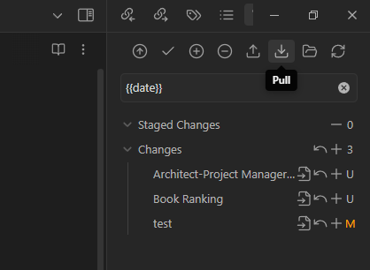

Obsidian Instructions
Date Created: June 11, 2025
Date Modified:
Most of the instructions, I derived it from here, but here is a step-by-step for using Obsidian + Git.
Feel free to skip the part you have already done in the past.
Remember, this need to push/pull changes manually, not real-time sync. Manual conflict will happen when team members edit same file. So make sure you communicate with your team members before editing a file.
1. Install Obsidian
Download and install Obsidian from the official website.
2. Git Installation
Make sure you have Git installed on your system. You can download it from the official Git website.
Make sure you have 3rd-party software access enabled.

Enable Git Credential Manager

3. Create GitHub Account
If you don't have a GitHub account, create one at GitHub.com.
This is needed to push your Obsidian vault version whenever you change something.
4. Set up Git identity
Open your terminal (Command Prompt, PowerShell, or Git Bash) and set your Git identity:
git config --global user.name "Your GitHub Name"
git config --global user.email "your.email@example.com"
5. Git Clone
Clone the Vault that I set up for you. Open your terminal and run:
cd C:\Users\YourUsername\Documents # The folder you want to clone the vault to
git clone https://github.com/ethannguyen2k/chiefy-vault.git
Note: There are 2 ways you can get the stuff from the vault: For existing remote repository But I recommend you follow this as it is an easier option of the twos.
6. Open Obsidian
Open Obsidian and select "Open folder as vault". Navigate to the folder where you cloned the vault (e.g., C:\Users\YourUsername\Documents\chiefy-vault) and open it.
7. Install Git Plugin
In Obsidian, go to Settings > Community plugins > Browse and search for "Git". Install the plugin named "Git" by "Vinzent" and enable it.
After installing the plugin, you can configure it by going to Settings > Git. But overall, you can leave the default settings as they are.
Every available commands: Available Commands
Now that you have set up Obsidian with Git, here's a simple daily workflow:
Before Starting Work
You have 2 options:
- Open Git source control (an icon on the right sidebar) and click on the "Pull" button to pull the latest changes from the remote repository. You would want to do this first when starting out to ensure the latest changes are pulled from the remote repository. 
- You can also pull the latest changes from now on by enabling the "Pull on startup" option in the Git plugin settings. This will automatically pull the latest changes from the remote repository whenever you open Obsidian.
After Finishing Work
After you finish your work, you can commit your changes and push them to the remote repository.
To do this, open the Git source control panel. Enter a commit message describing your changes and click "Commit-and-sync". More about Commit-and-sync. This will commit your changes and push them to the remote repository in one step.
Alternatively, you can also commit and push your changes separately. Create your commit locally by clicking the "Commit" button (assume you have entered your commit message), also on the Git source control panel. Then, click the "Push" button to push your changes to the remote repository.
Best Practices
- Pull before starting work
- Commit frequently with clear messages
- Push at end of sessions to keep it up-to-date
- Communicate with your team members
External Links for Guides